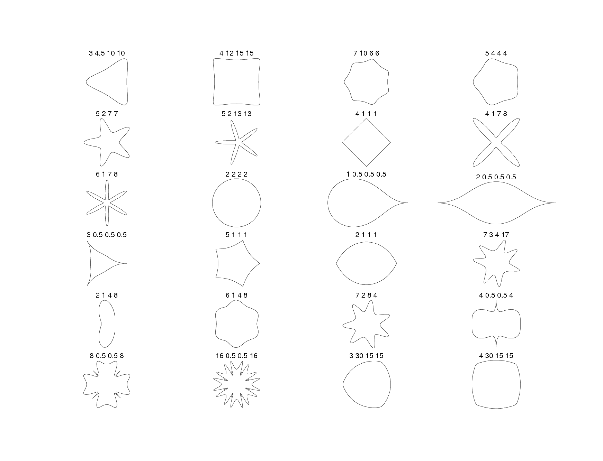
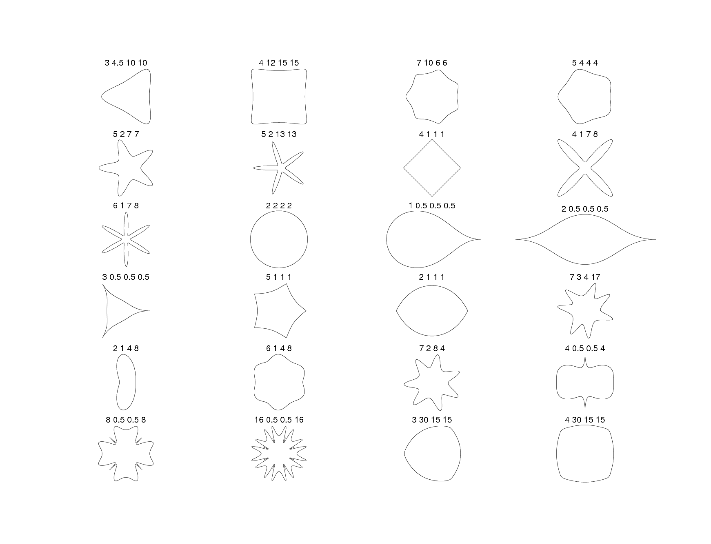
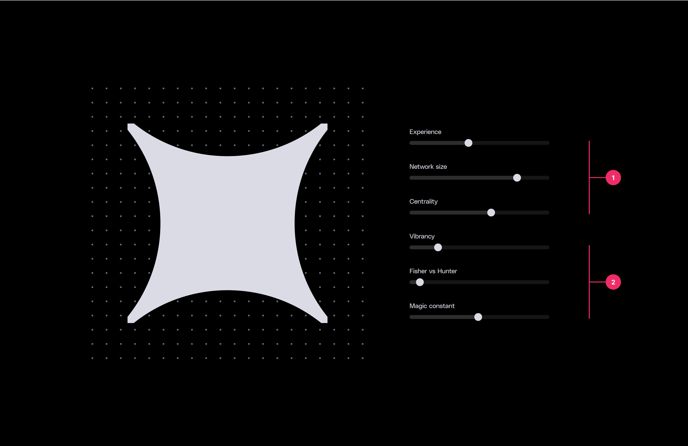
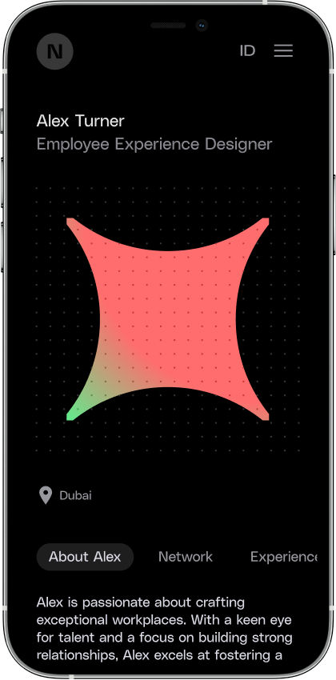
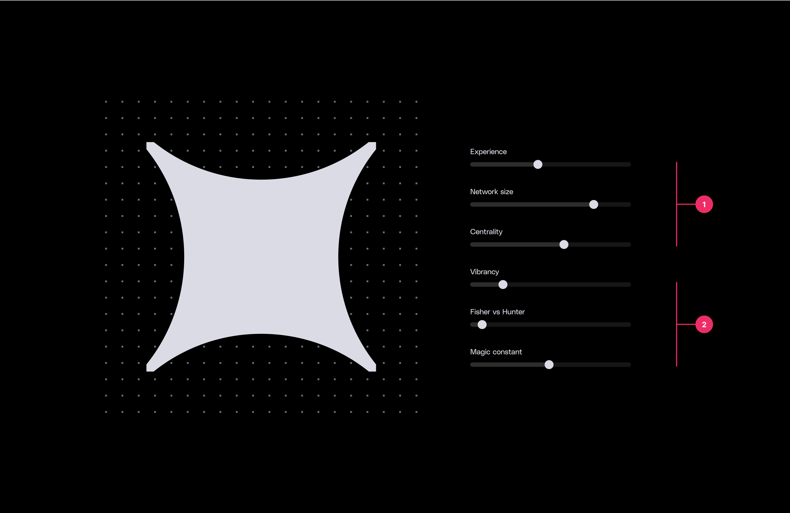
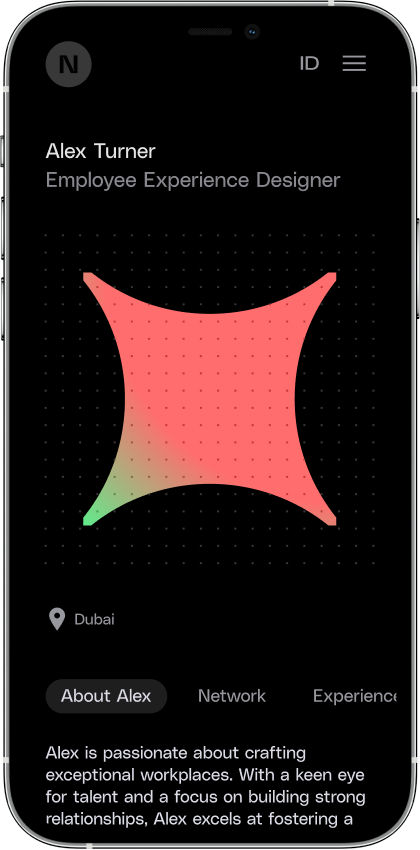
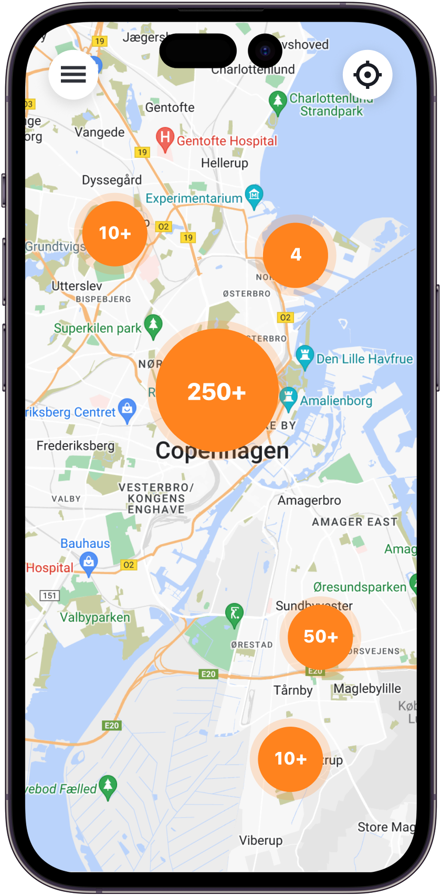
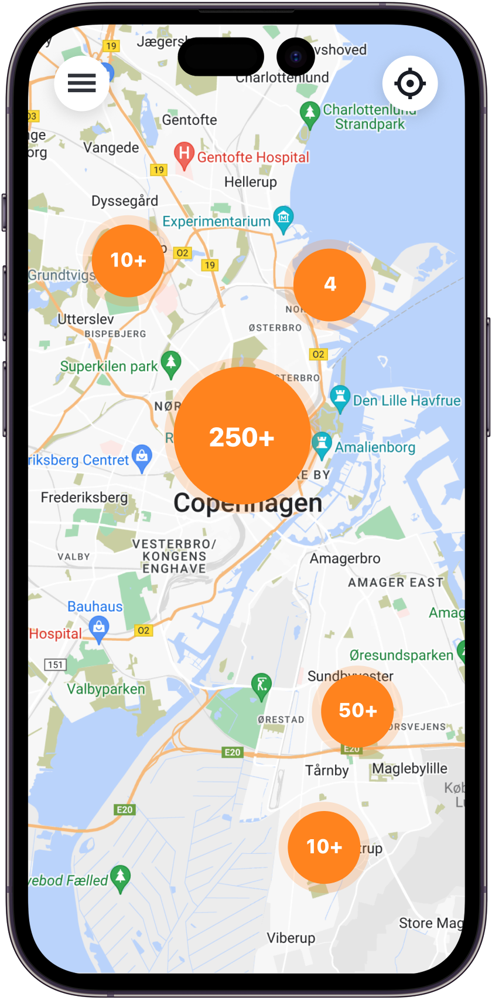
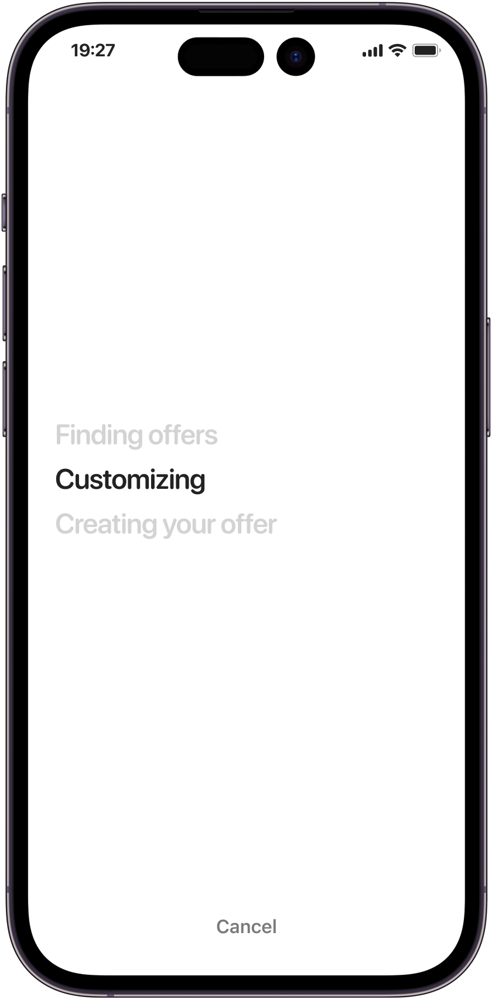
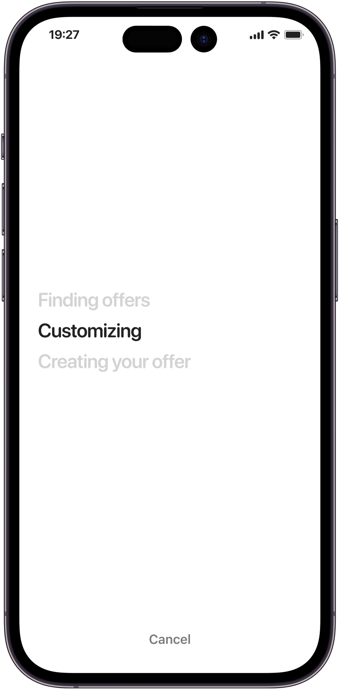

Neol member profiles


 

 



Neol is an creative hub where companies can find and collaborate with professionals from various fields, facilitating projects that require unique and tailored solutions. I helped design the platform, focusing on creating member profiles that highlight the abilities of the creative leaders.
Donkey Republic

 



Donkey Republic connects people with bike-sharing services in various cities. I helped with the design work on the Donkey Republic mobile app which aims to provide a simple interface for users looking for sustainable transportation options. Our team worked to ensure the experience would be accessible for users across different locations, making eco-friendly travel a bit more convenient.
Easisure (Prototype)
 



A self-service platform aimed at making insurance more accessible. The platform helps users navigate the claims process and offers tools to compare insurance packages from different providers. Our goal was to create a straightforward experience that removes some of the complexity from insurance decisions.
Flavor Tree (Interactive prototype)


Translating the coffee flavor lexicon into an application to represent the cumulative relationships between coffee flavors in a clear and intuitive manner.